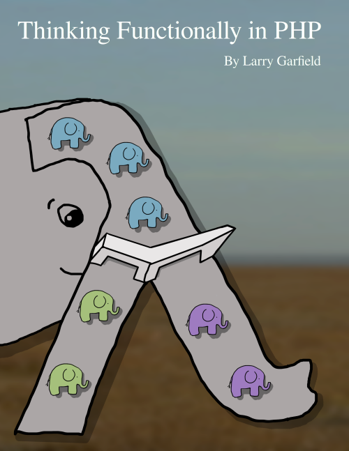
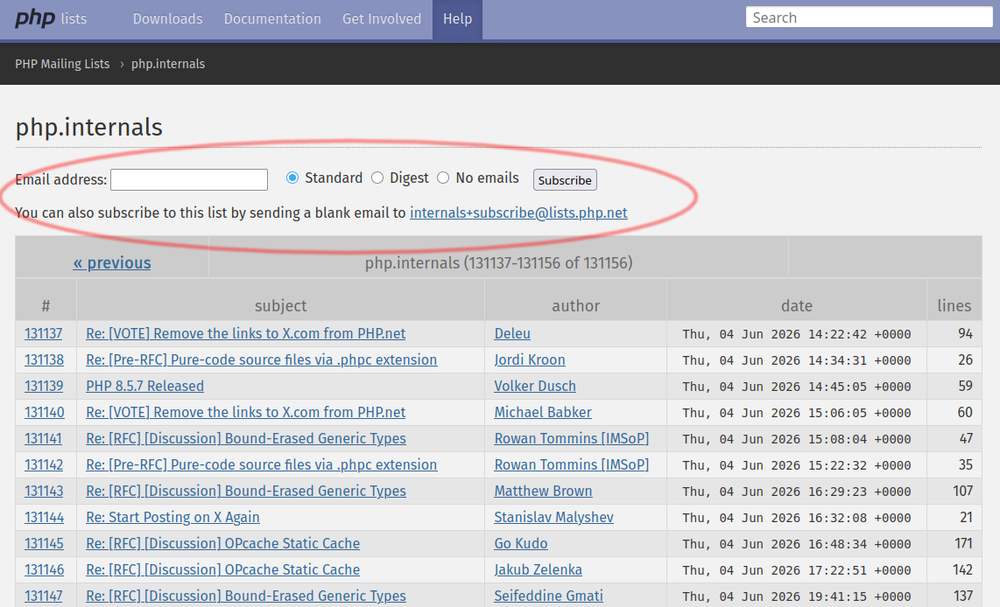
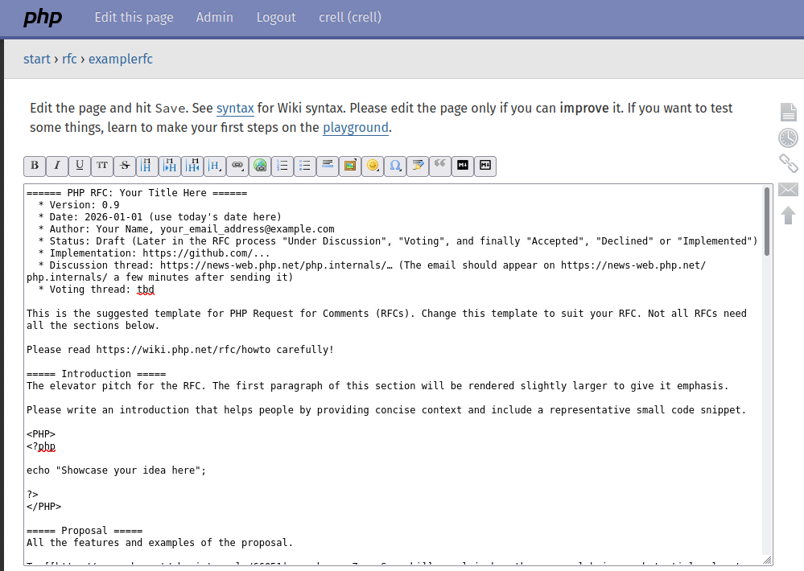
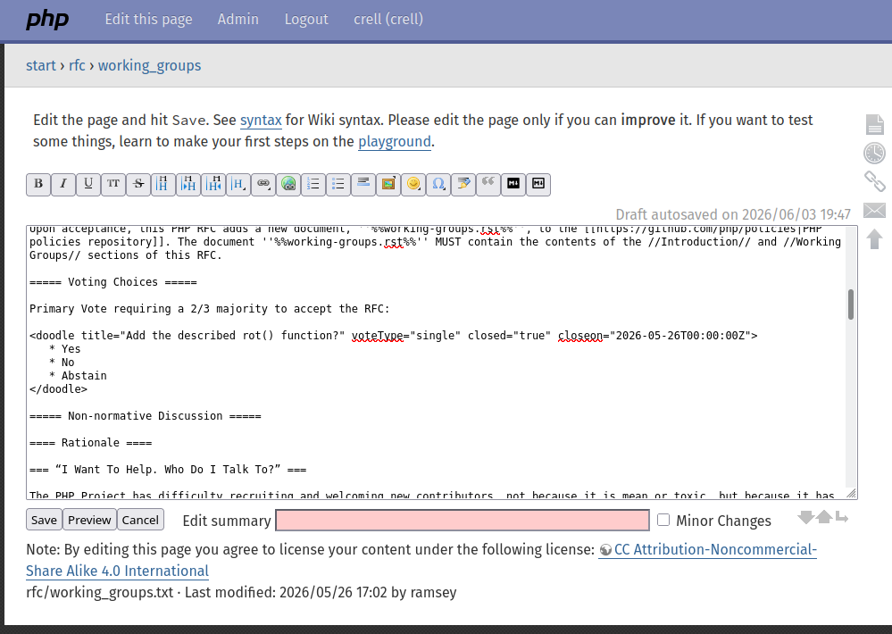

Demystifying PHP RFCs
Larry Garfield
@Crell@phpc.social


- PHP-FIG Core Committee
- PHP Core Contributor
- General purpose pedant
- Thinking Functionally in PHP
- Available for hire!
PHP is always advancing
Why should you care?
Why get involved?
- See what's coming
- Influence what's coming
- Change the future
How to get involved
Join the mailing list
Don't Panic
- Stable and reliable technology
- Not controlled by a megacorp technology
- Available to literally everyone technology
- Used by many other major projects technology
- Archive at https://news-web.php.net/php.internals
To join (easy way)
mailto:internals-subscribe@lists.php.net
To join (GUI way)
https://news-web.php.net/php.internals

List Etiquette
- Reply-all / Reply-List
- Reply at the bottom
- Plain text only, no HTML (Markdown is OK)
- Don't Be A Jerk™
See what's going on
Complete list of active and past RFCs.
(Great source for understanding why something is the way it is.)
How RFCs Happen
- Have an idea
- Discuss the idea
- Implement the idea
- Discuss the idea (part 2)
- Vote on the idea
- Profit???
Have an idea
- Solves a real problem
- ... for lots of people
- and cannot be reasonably done in user-space
Discuss the idea
To: internals@lists.php.net
From: me@example.com
Subject: [Proposal] Add configurable rot() function
Hi all. I want to discuss adding a configurable `rot()` function
to PHP. It would be more flexible than the existing `rot_13()`,
and allow rotating characters by any amount. This will greatly improve
our ability to write secure encryption routines.
E.g.:
```
$encoded = rot('hello world', 5);
print $encoded; // prints "mjqqt btwqi"
```
If the feedback is clearly negative...
If the feedback is positive...
Implement the idea
- Pull request against https://github.com/php/php-src/
- Warning: It's all ugly C
- Doesn't have to be perfect, find edge cases
- Protip: Partner with someone
Optional-ish
Get Wiki access
1. Sign up for free on wiki.php.net
2. Ask for access on the list
To: internals@lists.php.net
From: me@example.com
Subject: Wiki RFC access
Hi all. I am requesting RFC edit access on wiki.php.net
so I can work on the rot() RFC. My username is `me`.
Write the RFC

- Be concise and precise
- Use code examples liberally
- Warning: DokuWiki, not Markdown
Discuss (again)
To: internals@lists.php.net
From: me@example.com
Subject: [RFC] Add configurable rot() function
Hi all. I'd like to open discussion on the rot() function
proposal. The RFC is here:
https://wiki.php.net/rfc/arbitrary_rot
Looking forward to your feedback!
Discussion (again)
- Keep all replies in the one thread
- Expect the RFC and implementation to evolve
- Keep a changelog in the RFC
- Assume good faith; offer good faith
- This is open to everyone, including you!
Prepare for voting
- No change to the RFC for 2 weeks
- No substantive feedback for ~2 weeks
- You feel it's done™
To: internals@lists.php.net
From: me@example.com
Subject: Re: [RFC] Add configurable rot() function
> Hi all. I'd like to open discussion on the rot() function
> proposal. The RFC is here:
>
> https://wiki.php.net/rfc/arbitrary_rot
Hi all. As the discussion has died down, this is the Intent to Vote
notice. I'll open the vote sometime on Wednesday, barring any other feedback
before then.
Open the vote

Open the vote
To: internals@lists.php.net
From: me@example.com
Subject: [RFC][Vote] Add configurable rot() function
I have opened the vote on the configurable rot() function. The vote
will end at 4pm UTC on July 3rd.
https://wiki.php.net/rfc/arbitrary_rot
Previous discussion thread: https://externals.io/message/130912
But wait, who are the voters?
Some stats
- Number of voters
- ~1500
- Number that routinely vote
- ~100
- Number that vote on any given RFC
- ~25
Percentage of voters that also take part in the discussion: Too small
Becoming a voter
Someone with voting access decides you've contributed to PHP "enough."
Code and docs are best
Direct Democracy has its pros and cons...
If it doesn't pass
If it does pass
- Finish/polish the PR
- Timeframe varies
- Usual PR review/merge process